Under the hood:
How ARA Records Ansible playbooks &
makes them easier to understand and troubleshoot
David Moreau-Simard (fosstodon.org/@rfc2549)
Config Management Camp 2023
$ whoami
---
- name: David Moreau-Simard
hosts:
- dmsimard:matrix.org
- fosstodon.org/@rfc2549
vars:
location: Montreal, Canada (or rabbit holes)
profile: sysadmin, dev/ops, CI/CD, SRE
roles:
- Ansible user since version 1.8 or so (2014?)
- Created ara back in 2016 to make my life easier
- Previously in the Ansible community team @ Red Hat
- Part time open source contributor (between dev ops and dad ops)Ansible
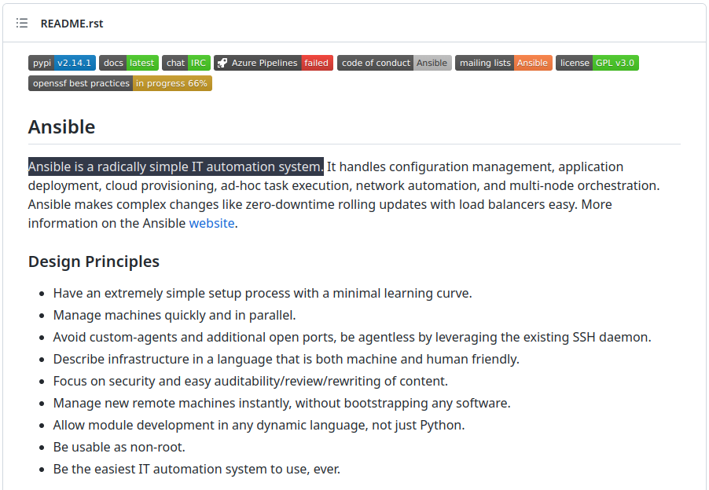https://github.com/ansible/ansible/blob/devel/README.rst
Configuration management with Ansible
- name: Setup nginx
hosts: web01
become: true
handlers:
- name: Restart nginx
service:
name: nginx
state: restarted
tasks:
- name: Install nginx
package:
name: nginx
state: present
- name: Configure virtual host
template:
src: vhost.conf.j2
dest: /etc/nginx/conf.d/service.conf
notify:
- Restart nginx
- name: Ensure nginx is started
service:
name: nginx
state: started
enabled: trueRunning an Ansible playbook
$ ansible-playbook -i hosts playbook.yml
PLAY [Setup nginx] **************************************************************************************************
TASK [Gathering Facts] **********************************************************************************************
ok: [web01]
TASK [Install nginx] ************************************************************************************************
changed: [web01]
TASK [Configure virtual host] ***************************************************************************************
changed: [web01]
TASK [Ensure nginx is started] **************************************************************************************
changed: [web01]
RUNNING HANDLER [Restart nginx] *************************************************************************************
changed: [web01]
PLAY RECAP **********************************************************************************************************
web01 : ok=5 changed=4 unreachable=0 failed=0 skipped=0 rescued=0 ignored=0Running an Ansible playbook (again)
$ ansible-playbook -i hosts playbook.yml
PLAY [Setup nginx] **************************************************************************************************
TASK [Gathering Facts] **********************************************************************************************
ok: [web01]
TASK [Install nginx] ************************************************************************************************
ok: [web01]
TASK [Configure virtual host] ***************************************************************************************
ok: [web01]
TASK [Ensure nginx is started] **************************************************************************************
ok: [web01]
PLAY RECAP **********************************************************************************************************
web01 : ok=4 changed=0 unreachable=0 failed=0 skipped=0 rescued=0 ignored=0Running an Ansible playbook with verbosity
$ ansible-playbook -vv -i hosts playbook.yml --diff
PLAY [Setup nginx] **************************************************************************************************
TASK [Gathering Facts] **********************************************************************************************
task path: /root/ansible/playbook.yml:1
ok: [web01]
TASK [Install nginx] ************************************************************************************************
task path: /root/ansible/playbook.yml:10
changed: [web01] => {"changed": true, "msg": "", "rc": 0, "results": ["Installed: nginx-filesystem-1:1.22.1-2.el9.noarch", "Installed: nginx-core-1:1.22.1-2.el9.x86_64", "Installed: nginx-1:1.22.1-2.el9.x86_64"]}
TASK [Configure virtual host] ***************************************************************************************
task path: /root/ansible/playbook.yml:14
NOTIFIED HANDLER Restart nginx for web01
--- before
+++ after: /root/.ansible/tmp/ansible-local-16494np9ywx2w/tmprulqs3af/vhost.conf.j2
@@ -0,0 +1,5 @@
+server {
+ listen 80;
+ server_name web01.domain.tld;
+ return 301 https://ara.recordsansible.org$request_uri;
+}
changed: [web01] => {"changed": true, "checksum": "0d3a4953ac474f9849fabb52f606b7b0bf4076ca", "dest": "/etc/nginx/conf.d/service.conf", "gid": 0, "group": "root", "md5sum": "0fd4e5e83caabfe9e62751e57fbffd58", "mode": "0644", "owner": "root", "secontext": "system_u:object_r:httpd_config_t:s0", "size": 119, "src": "/root/.ansible/tmp/ansible-tmp-1675140057.4921842-16677-151358545009096/source", "state": "file", "uid": 0}
TASK [Ensure nginx is started] **************************************************************************************
task path: /root/ansible/playbook.yml:20
changed: [web01] => {"changed": true, "enabled": true, "name": "nginx", "state": "started", "status": {"ActiveEnterTimestampMonotonic": "0", "ActiveExitTimestampMonotonic": "0", "ActiveState": "inactive", "After": "system.slice sysinit.target systemd-journald.socket remote-fs.target -.mount systemd-tmpfiles-setup.service network-online.target tmp.mount basic.target nss-lookup.target", "AllowIsolate": "no", "AssertResult": "no", "AssertTimestampMonotonic": "0", "Before": "shutdown.target", "BlockIOAccounting": "no", "BlockIOWeight": "[not set]", "CPUAccounting": "yes", "CPUAffinityFromNUMA": "no", "CPUQuotaPerSecUSec": "infinity", "CPUQuotaPeriodUSec": "infinity", "CPUSchedulingPolicy": "0", "CPUSchedulingPriority": "0", "CPUSchedulingResetOnFork": "no", "CPUShares": "[not set]", "CPUUsageNSec": "[not set]", "CPUWeight": "[not set]", "CacheDirectoryMode": "0755", "CanFreeze": "yes", "CanIsolate": "no", "CanReload": "yes", "CanStart": "yes", "CanStop": "yes", "CapabilityBoundingSet": "cap_chown cap_dac_override cap_dac_read_search cap_fowner cap_fsetid cap_kill cap_setgid cap_setuid cap_setpcap cap_linux_immutable cap_net_bind_service cap_net_broadcast cap_net_admin cap_net_raw cap_ipc_lock cap_ipc_owner cap_sys_module cap_sys_rawio cap_sys_chroot cap_sys_ptrace cap_sys_pacct cap_sys_admin cap_sys_boot cap_sys_nice cap_sys_resource cap_sys_time cap_sys_tty_config cap_mknod cap_lease cap_audit_write cap_audit_control cap_setfcap cap_mac_override cap_mac_admin cap_syslog cap_wake_alarm cap_block_suspend cap_audit_read cap_perfmon cap_bpf cap_checkpoint_restore", "CleanResult": "success", "CollectMode": "inactive", "ConditionResult": "no", "ConditionTimestampMonotonic": "0", "ConfigurationDirectoryMode": "0755", "Conflicts": "shutdown.target", "ControlPID": "0", "CoredumpFilter": "0x33", "DefaultDependencies": "yes", "DefaultMemoryLow": "0", "DefaultMemoryMin": "0", "Delegate": "no", "Description": "The nginx HTTP and reverse proxy server", "DevicePolicy": "auto", "DynamicUser": "no", "ExecMainCode": "0", "ExecMainExitTimestampMonotonic": "0", "ExecMainPID": "0", "ExecMainStartTimestampMonotonic": "0", "ExecMainStatus": "0", "ExecReload": "{ path=/usr/sbin/nginx ; argv[]=/usr/sbin/nginx -s reload ; ignore_errors=no ; start_time=[n/a] ; stop_time=[n/a] ; pid=0 ; code=(null) ; status=0/0 }", "ExecReloadEx": "{ path=/usr/sbin/nginx ; argv[]=/usr/sbin/nginx -s reload ; flags= ; start_time=[n/a] ; stop_time=[n/a] ; pid=0 ; code=(null) ; status=0/0 }", "ExecStart": "{ path=/usr/sbin/nginx ; argv[]=/usr/sbin/nginx ; ignore_errors=no ; start_time=[n/a] ; stop_time=[n/a] ; pid=0 ; code=(null) ; status=0/0 }", "ExecStartEx": "{ path=/usr/sbin/nginx ; argv[]=/usr/sbin/nginx ; flags= ; start_time=[n/a] ; stop_time=[n/a] ; pid=0 ; code=(null) ; status=0/0 }", "ExecStartPre": "{ path=/usr/sbin/nginx ; argv[]=/usr/sbin/nginx -t ; ignore_errors=no ; start_time=[n/a] ; stop_time=[n/a] ; pid=0 ; code=(null) ; status=0/0 }", "ExecStartPreEx": "{ path=/usr/sbin/nginx ; argv[]=/usr/sbin/nginx -t ; flags= ; start_time=[n/a] ; stop_time=[n/a] ; pid=0 ; code=(null) ; status=0/0 }", "ExitType": "main", "FailureAction": "none", "FileDescriptorStoreMax": "0", "FinalKillSignal": "9", "FragmentPath": "/usr/lib/systemd/system/nginx.service", "FreezerState": "running", "GID": "[not set]", "GuessMainPID": "yes", "IOAccounting": "no", "IOReadBytes": "18446744073709551615", "IOReadOperations": "18446744073709551615", "IOSchedulingClass": "2", "IOSchedulingPriority": "4", "IOWeight": "[not set]", "IOWriteBytes": "18446744073709551615", "IOWriteOperations": "18446744073709551615", "IPAccounting": "no", "IPEgressBytes": "[no data]", "IPEgressPackets": "[no data]", "IPIngressBytes": "[no data]", "IPIngressPackets": "[no data]", "Id": "nginx.service", "IgnoreOnIsolate": "no", "IgnoreSIGPIPE": "yes", "InactiveEnterTimestampMonotonic": "0", "InactiveExitTimestampMonotonic": "0", "JobRunningTimeoutUSec": "infinity", "JobTimeoutAction": "none", "JobTimeoutUSec": "infinity", "KeyringMode": "private", "KillMode": "mixed", "KillSignal": "3", "LimitAS": "infinity", "LimitASSoft": "infinity", "LimitCORE": "infinity", "LimitCORESoft": "0", "LimitCPU": "infinity", "LimitCPUSoft": "infinity", "LimitDATA": "infinity", "LimitDATASoft": "infinity", "LimitFSIZE": "infinity", "LimitFSIZESoft": "infinity", "LimitLOCKS": "infinity", "LimitLOCKSSoft": "infinity", "LimitMEMLOCK": "65536", "LimitMEMLOCKSoft": "65536", "LimitMSGQUEUE": "819200", "LimitMSGQUEUESoft": "819200", "LimitNICE": "0", "LimitNICESoft": "0", "LimitNOFILE": "524288", "LimitNOFILESoft": "1024", "LimitNPROC": "14626", "LimitNPROCSoft": "14626", "LimitRSS": "infinity", "LimitRSSSoft": "infinity", "LimitRTPRIO": "0", "LimitRTPRIOSoft": "0", "LimitRTTIME": "infinity", "LimitRTTIMESoft": "infinity", "LimitSIGPENDING": "14626", "LimitSIGPENDINGSoft": "14626", "LimitSTACK": "infinity", "LimitSTACKSoft": "8388608", "LoadState": "loaded", "LockPersonality": "no", "LogLevelMax": "-1", "LogRateLimitBurst": "0", "LogRateLimitIntervalUSec": "0", "LogsDirectoryMode": "0755", "MainPID": "0", "ManagedOOMMemoryPressure": "auto", "ManagedOOMMemoryPressureLimit": "0", "ManagedOOMPreference": "none", "ManagedOOMSwap": "auto", "MemoryAccounting": "yes", "MemoryAvailable": "infinity", "MemoryCurrent": "[not set]", "MemoryDenyWriteExecute": "no", "MemoryHigh": "infinity", "MemoryLimit": "infinity", "MemoryLow": "0", "MemoryMax": "infinity", "MemoryMin": "0", "MemorySwapMax": "infinity", "MountAPIVFS": "no", "NFileDescriptorStore": "0", "NRestarts": "0", "NUMAPolicy": "n/a", "Names": "nginx.service", "NeedDaemonReload": "no", "Nice": "0", "NoNewPrivileges": "no", "NonBlocking": "no", "NotifyAccess": "none", "OOMPolicy": "stop", "OOMScoreAdjust": "0", "OnFailureJobMode": "replace", "OnSuccessJobMode": "fail", "PIDFile": "/run/nginx.pid", "Perpetual": "no", "PrivateDevices": "no", "PrivateIPC": "no", "PrivateMounts": "no", "PrivateNetwork": "no", "PrivateTmp": "yes", "PrivateUsers": "no", "ProcSubset": "all", "ProtectClock": "no", "ProtectControlGroups": "no", "ProtectHome": "no", "ProtectHostname": "no", "ProtectKernelLogs": "no", "ProtectKernelModules": "no", "ProtectKernelTunables": "no", "ProtectProc": "default", "ProtectSystem": "no", "RefuseManualStart": "no", "RefuseManualStop": "no", "ReloadResult": "success", "RemainAfterExit": "no", "RemoveIPC": "no", "Requires": "-.mount system.slice sysinit.target", "RequiresMountsFor": "/var/tmp", "Restart": "no", "RestartKillSignal": "3", "RestartUSec": "100ms", "RestrictNamespaces": "no", "RestrictRealtime": "no", "RestrictSUIDSGID": "no", "Result": "success", "RootDirectoryStartOnly": "no", "RuntimeDirectoryMode": "0755", "RuntimeDirectoryPreserve": "no", "RuntimeMaxUSec": "infinity", "RuntimeRandomizedExtraUSec": "0", "SameProcessGroup": "no", "SecureBits": "0", "SendSIGHUP": "no", "SendSIGKILL": "yes", "Slice": "system.slice", "StandardError": "inherit", "StandardInput": "null", "StandardOutput": "journal", "StartLimitAction": "none", "StartLimitBurst": "5", "StartLimitIntervalUSec": "10s", "StartupBlockIOWeight": "[not set]", "StartupCPUShares": "[not set]", "StartupCPUWeight": "[not set]", "StartupIOWeight": "[not set]", "StateChangeTimestampMonotonic": "0", "StateDirectoryMode": "0755", "StatusErrno": "0", "StopWhenUnneeded": "no", "SubState": "dead", "SuccessAction": "none", "SyslogFacility": "3", "SyslogLevel": "6", "SyslogLevelPrefix": "yes", "SyslogPriority": "30", "SystemCallErrorNumber": "2147483646", "TTYReset": "no", "TTYVHangup": "no", "TTYVTDisallocate": "no", "TasksAccounting": "yes", "TasksCurrent": "[not set]", "TasksMax": "23402", "TimeoutAbortUSec": "5s", "TimeoutCleanUSec": "infinity", "TimeoutStartFailureMode": "terminate", "TimeoutStartUSec": "1min 30s", "TimeoutStopFailureMode": "terminate", "TimeoutStopUSec": "5s", "TimerSlackNSec": "50000", "Transient": "no", "Type": "forking", "UID": "[not set]", "UMask": "0022", "UnitFilePreset": "disabled", "UnitFileState": "disabled", "UtmpMode": "init", "Wants": "network-online.target", "WatchdogSignal": "6", "WatchdogTimestampMonotonic": "0", "WatchdogUSec": "infinity"}}
RUNNING HANDLER [Restart nginx] *************************************************************************************
task path: /root/ansible/playbook.yml:5
changed: [web01] => {"changed": true, "name": "nginx", "state": "started", "status": {"ActiveEnterTimestamp": "Mon 2023-01-30 23:41:00 EST", "ActiveEnterTimestampMonotonic": "2167744798", "ActiveExitTimestampMonotonic": "0", "ActiveState": "active", "After": "remote-fs.target tmp.mount systemd-tmpfiles-setup.service basic.target sysinit.target system.slice network-online.target systemd-journald.socket nss-lookup.target -.mount", "AllowIsolate": "no", "AssertResult": "yes", "AssertTimestamp": "Mon 2023-01-30 23:41:00 EST", "AssertTimestampMonotonic": "2167703768", "Before": "multi-user.target shutdown.target", "BlockIOAccounting": "no", "BlockIOWeight": "[not set]", "CPUAccounting": "yes", "CPUAffinityFromNUMA": "no", "CPUQuotaPerSecUSec": "infinity", "CPUQuotaPeriodUSec": "infinity", "CPUSchedulingPolicy": "0", "CPUSchedulingPriority": "0", "CPUSchedulingResetOnFork": "no", "CPUShares": "[not set]", "CPUUsageNSec": "48819000", "CPUWeight": "[not set]", "CacheDirectoryMode": "0755", "CanFreeze": "yes", "CanIsolate": "no", "CanReload": "yes", "CanStart": "yes", "CanStop": "yes", "CapabilityBoundingSet": "cap_chown cap_dac_override cap_dac_read_search cap_fowner cap_fsetid cap_kill cap_setgid cap_setuid cap_setpcap cap_linux_immutable cap_net_bind_service cap_net_broadcast cap_net_admin cap_net_raw cap_ipc_lock cap_ipc_owner cap_sys_module cap_sys_rawio cap_sys_chroot cap_sys_ptrace cap_sys_pacct cap_sys_admin cap_sys_boot cap_sys_nice cap_sys_resource cap_sys_time cap_sys_tty_config cap_mknod cap_lease cap_audit_write cap_audit_control cap_setfcap cap_mac_override cap_mac_admin cap_syslog cap_wake_alarm cap_block_suspend cap_audit_read cap_perfmon cap_bpf cap_checkpoint_restore", "CleanResult": "success", "CollectMode": "inactive", "ConditionResult": "yes", "ConditionTimestamp": "Mon 2023-01-30 23:41:00 EST", "ConditionTimestampMonotonic": "2167703765", "ConfigurationDirectoryMode": "0755", "Conflicts": "shutdown.target", "ControlGroup": "/system.slice/nginx.service", "ControlPID": "0", "CoredumpFilter": "0x33", "DefaultDependencies": "yes", "DefaultMemoryLow": "0", "DefaultMemoryMin": "0", "Delegate": "no", "Description": "The nginx HTTP and reverse proxy server", "DevicePolicy": "auto", "DynamicUser": "no", "ExecMainCode": "0", "ExecMainExitTimestampMonotonic": "0", "ExecMainPID": "16751", "ExecMainStartTimestamp": "Mon 2023-01-30 23:41:00 EST", "ExecMainStartTimestampMonotonic": "2167744725", "ExecMainStatus": "0", "ExecReload": "{ path=/usr/sbin/nginx ; argv[]=/usr/sbin/nginx -s reload ; ignore_errors=no ; start_time=[n/a] ; stop_time=[n/a] ; pid=0 ; code=(null) ; status=0/0 }", "ExecReloadEx": "{ path=/usr/sbin/nginx ; argv[]=/usr/sbin/nginx -s reload ; flags= ; start_time=[n/a] ; stop_time=[n/a] ; pid=0 ; code=(null) ; status=0/0 }", "ExecStart": "{ path=/usr/sbin/nginx ; argv[]=/usr/sbin/nginx ; ignore_errors=no ; start_time=[Mon 2023-01-30 23:41:00 EST] ; stop_time=[Mon 2023-01-30 23:41:00 EST] ; pid=16750 ; code=exited ; status=0 }", "ExecStartEx": "{ path=/usr/sbin/nginx ; argv[]=/usr/sbin/nginx ; flags= ; start_time=[Mon 2023-01-30 23:41:00 EST] ; stop_time=[Mon 2023-01-30 23:41:00 EST] ; pid=16750 ; code=exited ; status=0 }", "ExecStartPre": "{ path=/usr/sbin/nginx ; argv[]=/usr/sbin/nginx -t ; ignore_errors=no ; start_time=[Mon 2023-01-30 23:41:00 EST] ; stop_time=[Mon 2023-01-30 23:41:00 EST] ; pid=16749 ; code=exited ; status=0 }", "ExecStartPreEx": "{ path=/usr/sbin/nginx ; argv[]=/usr/sbin/nginx -t ; flags= ; start_time=[Mon 2023-01-30 23:41:00 EST] ; stop_time=[Mon 2023-01-30 23:41:00 EST] ; pid=16749 ; code=exited ; status=0 }", "ExitType": "main", "FailureAction": "none", "FileDescriptorStoreMax": "0", "FinalKillSignal": "9", "FragmentPath": "/usr/lib/systemd/system/nginx.service", "FreezerState": "running", "GID": "[not set]", "GuessMainPID": "yes", "IOAccounting": "no", "IOReadBytes": "18446744073709551615", "IOReadOperations": "18446744073709551615", "IOSchedulingClass": "2", "IOSchedulingPriority": "4", "IOWeight": "[not set]", "IOWriteBytes": "18446744073709551615", "IOWriteOperations": "18446744073709551615", "IPAccounting": "no", "IPEgressBytes": "[no data]", "IPEgressPackets": "[no data]", "IPIngressBytes": "[no data]", "IPIngressPackets": "[no data]", "Id": "nginx.service", "IgnoreOnIsolate": "no", "IgnoreSIGPIPE": "yes", "InactiveEnterTimestampMonotonic": "0", "InactiveExitTimestamp": "Mon 2023-01-30 23:41:00 EST", "InactiveExitTimestampMonotonic": "2167706654", "InvocationID": "87b464515eec4ac496ea2620ee8032c6", "JobRunningTimeoutUSec": "infinity", "JobTimeoutAction": "none", "JobTimeoutUSec": "infinity", "KeyringMode": "private", "KillMode": "mixed", "KillSignal": "3", "LimitAS": "infinity", "LimitASSoft": "infinity", "LimitCORE": "infinity", "LimitCORESoft": "0", "LimitCPU": "infinity", "LimitCPUSoft": "infinity", "LimitDATA": "infinity", "LimitDATASoft": "infinity", "LimitFSIZE": "infinity", "LimitFSIZESoft": "infinity", "LimitLOCKS": "infinity", "LimitLOCKSSoft": "infinity", "LimitMEMLOCK": "65536", "LimitMEMLOCKSoft": "65536", "LimitMSGQUEUE": "819200", "LimitMSGQUEUESoft": "819200", "LimitNICE": "0", "LimitNICESoft": "0", "LimitNOFILE": "524288", "LimitNOFILESoft": "1024", "LimitNPROC": "14626", "LimitNPROCSoft": "14626", "LimitRSS": "infinity", "LimitRSSSoft": "infinity", "LimitRTPRIO": "0", "LimitRTPRIOSoft": "0", "LimitRTTIME": "infinity", "LimitRTTIMESoft": "infinity", "LimitSIGPENDING": "14626", "LimitSIGPENDINGSoft": "14626", "LimitSTACK": "infinity", "LimitSTACKSoft": "8388608", "LoadState": "loaded", "LockPersonality": "no", "LogLevelMax": "-1", "LogRateLimitBurst": "0", "LogRateLimitIntervalUSec": "0", "LogsDirectoryMode": "0755", "MainPID": "16751", "ManagedOOMMemoryPressure": "auto", "ManagedOOMMemoryPressureLimit": "0", "ManagedOOMPreference": "none", "ManagedOOMSwap": "auto", "MemoryAccounting": "yes", "MemoryAvailable": "infinity", "MemoryCurrent": "4829184", "MemoryDenyWriteExecute": "no", "MemoryHigh": "infinity", "MemoryLimit": "infinity", "MemoryLow": "0", "MemoryMax": "infinity", "MemoryMin": "0", "MemorySwapMax": "infinity", "MountAPIVFS": "no", "NFileDescriptorStore": "0", "NRestarts": "0", "NUMAPolicy": "n/a", "Names": "nginx.service", "NeedDaemonReload": "no", "Nice": "0", "NoNewPrivileges": "no", "NonBlocking": "no", "NotifyAccess": "none", "OOMPolicy": "stop", "OOMScoreAdjust": "0", "OnFailureJobMode": "replace", "OnSuccessJobMode": "fail", "PIDFile": "/run/nginx.pid", "Perpetual": "no", "PrivateDevices": "no", "PrivateIPC": "no", "PrivateMounts": "no", "PrivateNetwork": "no", "PrivateTmp": "yes", "PrivateUsers": "no", "ProcSubset": "all", "ProtectClock": "no", "ProtectControlGroups": "no", "ProtectHome": "no", "ProtectHostname": "no", "ProtectKernelLogs": "no", "ProtectKernelModules": "no", "ProtectKernelTunables": "no", "ProtectProc": "default", "ProtectSystem": "no", "RefuseManualStart": "no", "RefuseManualStop": "no", "ReloadResult": "success", "RemainAfterExit": "no", "RemoveIPC": "no", "Requires": "-.mount sysinit.target system.slice", "RequiresMountsFor": "/var/tmp", "Restart": "no", "RestartKillSignal": "3", "RestartUSec": "100ms", "RestrictNamespaces": "no", "RestrictRealtime": "no", "RestrictSUIDSGID": "no", "Result": "success", "RootDirectoryStartOnly": "no", "RuntimeDirectoryMode": "0755", "RuntimeDirectoryPreserve": "no", "RuntimeMaxUSec": "infinity", "RuntimeRandomizedExtraUSec": "0", "SameProcessGroup": "no", "SecureBits": "0", "SendSIGHUP": "no", "SendSIGKILL": "yes", "Slice": "system.slice", "StandardError": "inherit", "StandardInput": "null", "StandardOutput": "journal", "StartLimitAction": "none", "StartLimitBurst": "5", "StartLimitIntervalUSec": "10s", "StartupBlockIOWeight": "[not set]", "StartupCPUShares": "[not set]", "StartupCPUWeight": "[not set]", "StartupIOWeight": "[not set]", "StateChangeTimestamp": "Mon 2023-01-30 23:41:00 EST", "StateChangeTimestampMonotonic": "2167744798", "StateDirectoryMode": "0755", "StatusErrno": "0", "StopWhenUnneeded": "no", "SubState": "running", "SuccessAction": "none", "SyslogFacility": "3", "SyslogLevel": "6", "SyslogLevelPrefix": "yes", "SyslogPriority": "30", "SystemCallErrorNumber": "2147483646", "TTYReset": "no", "TTYVHangup": "no", "TTYVTDisallocate": "no", "TasksAccounting": "yes", "TasksCurrent": "5", "TasksMax": "23402", "TimeoutAbortUSec": "5s", "TimeoutCleanUSec": "infinity", "TimeoutStartFailureMode": "terminate", "TimeoutStartUSec": "1min 30s", "TimeoutStopFailureMode": "terminate", "TimeoutStopUSec": "5s", "TimerSlackNSec": "50000", "Transient": "no", "Type": "forking", "UID": "[not set]", "UMask": "0022", "UnitFilePreset": "disabled", "UnitFileState": "enabled", "UtmpMode": "init", "WantedBy": "multi-user.target", "Wants": "network-online.target", "WatchdogSignal": "6", "WatchdogTimestampMonotonic": "0", "WatchdogUSec": "0"}}
PLAY RECAP **********************************************************************************************************
web01 : ok=5 changed=4 unreachable=0 failed=0 skipped=0 rescued=0 ignored=0What verbosity actually looks like
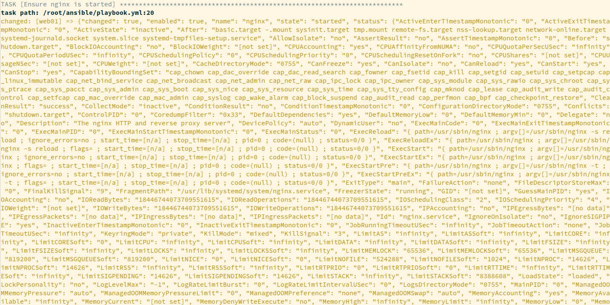What verbosity actually looks like
This output comes from the default Ansible stdout callback
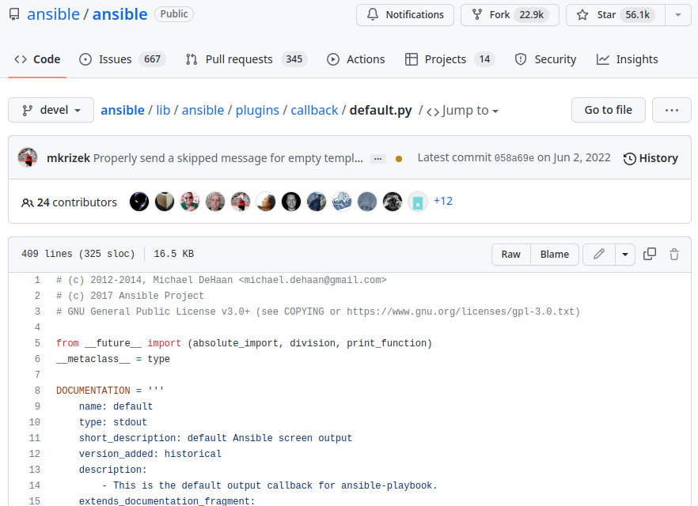https://github.com/ansible/ansible/blob/devel/lib/ansible/plugins/callback/default.py
There's different kinds of callbacks
See examples: https://rndmh3ro.github.io/
Ansible callbacks provide hooks to react on certain events
> grep v2_ lib/ansible/plugins/callback/__init__.py
def v2_on_any(self, *args, **kwargs):
def v2_runner_on_failed(self, result, ignore_errors=False):
def v2_runner_on_ok(self, result):
def v2_runner_on_skipped(self, result):
def v2_runner_on_unreachable(self, result):
def v2_runner_on_async_poll(self, result):
def v2_runner_on_async_ok(self, result):
def v2_runner_on_async_failed(self, result):
def v2_playbook_on_start(self, playbook):
def v2_playbook_on_notify(self, handler, host):
def v2_playbook_on_no_hosts_matched(self):
def v2_playbook_on_no_hosts_remaining(self):
def v2_playbook_on_task_start(self, task, is_conditional):
def v2_playbook_on_cleanup_task_start(self, task):
def v2_playbook_on_handler_task_start(self, task):
def v2_playbook_on_vars_prompt(self, varname, private=True, prompt=None, encrypt=None, confirm=False, salt_size=None, salt=None, default=None, unsafe=None):
def v2_playbook_on_import_for_host(self, result, imported_file):
def v2_playbook_on_not_import_for_host(self, result, missing_file):
def v2_playbook_on_play_start(self, play):
def v2_playbook_on_stats(self, stats):
def v2_on_file_diff(self, result):
def v2_playbook_on_include(self, included_file):
def v2_runner_item_on_ok(self, result):
def v2_runner_item_on_failed(self, result):
def v2_runner_item_on_skipped(self, result):
def v2_runner_retry(self, result):
def v2_runner_on_start(self, host, task):ara uses these hooks to record results
At first there was no API 😱
It worked... but:
- Built on the foundation of a weekend proof of concept
- Not very flexible, requires the callback to have access to the database
- Need knowledge of the database model to integrate in tools and scripts
- Duplicated code across callback, CLI and web interface
- Tried to add an API on top of the existing Flask backend
- Ended up re-writing everything to django & django-rest-framework
Now there's an API 🎉
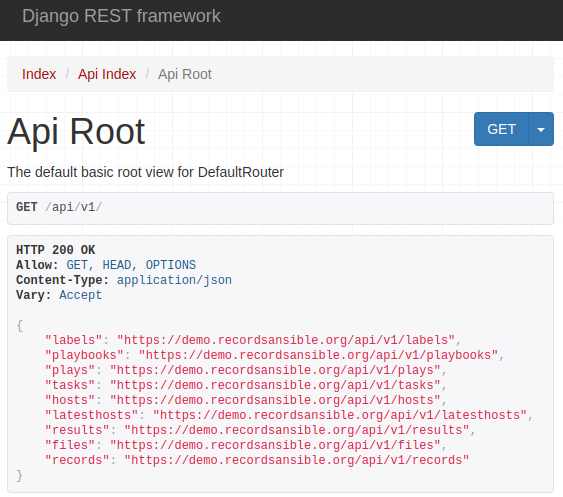https://demo.recordsansible.org/api/v1/
So the callback can use it
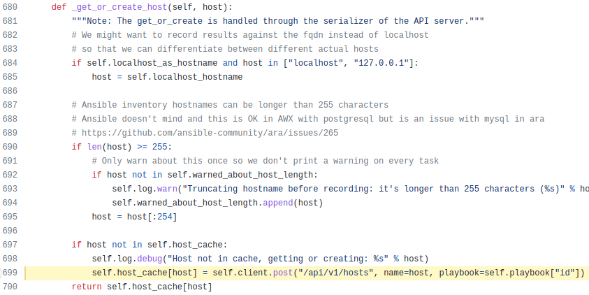https://github.com/ansible-community/ara/blob/master/ara/plugins/callback/ara_default.py
The CLI too
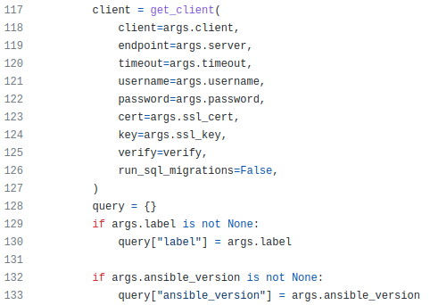https://github.com/ansible-community/ara/blob/master/ara/cli/playbook.py
The CLI too
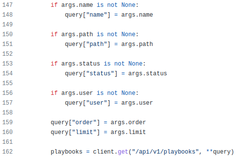https://github.com/ansible-community/ara/blob/master/ara/cli/playbook.py
... and anything else ¯\(ツ)/¯
Ansible action and lookup plugins
- name: Test playbook
hosts: localhost
tasks:
- name: Get the currently running playbook
ara_playbook:
register: query
- name: Retrieve playbook id
set_fact:
playbook_id: "{{ query.playbook.id | string }}"
# With the playbook id we can create a link to the playbook report
- name: Recover base url from ara
set_fact:
api_base_url: "{{ lookup('ara_api', '/api/') }}"
- name: Print link to playbook report
vars:
ui_base_url: "{{ api_base_url.api[0] | regex_replace('/api/v1/', '') }}"
debug:
msg: "{{ ui_base_url }}/playbooks/{{ playbook_id }}.html"... and anything else ¯\(ツ)/¯
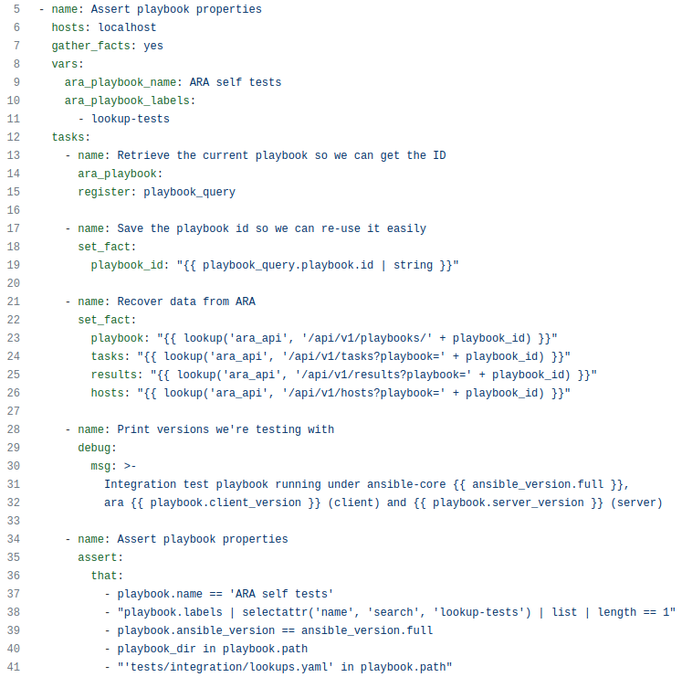https://github.com/ansible-community/ara/blob/master/tests/integration/lookups.yaml
... and anything else ¯\(ツ)/¯
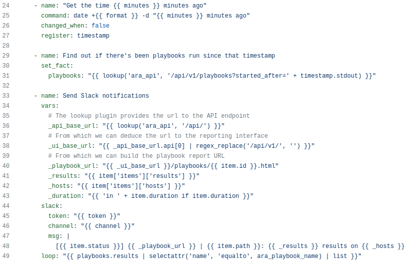https://github.com/ansible-community/ara/blob/master/contrib/playbooks/slack-notifications.yaml
Thanks to built-in API clients
#!/usr/bin/env python3
# Import the client
from ara.clients.http import AraHttpClient
# Instanciate the HTTP client with an endpoint where an API server is listening
client = AraHttpClient(endpoint="https://demo.recordsansible.org")
# Get a list of failed playbooks
# /api/v1/playbooks?status=failed
playbooks = client.get("/api/v1/playbooks", status="failed")Even "offline" (by default!)
#!/usr/bin/env python3
# Import the client
from ara.clients.offline import AraOfflineClient
# Instanciate the HTTP client with an endpoint where an API server is listening
client = AraOfflineClient()
# Get a list of failed playbooks
# /api/v1/playbooks?status=failed
playbooks = client.get("/api/v1/playbooks", status="failed")Kind of offline
An ephemeral server made available in the background
> netstat -ntlp
Proto Recv-Q Send-Q Local Address Foreign Address State PID/Program name
# ...
tcp 0 0 127.0.0.1:34293 0.0.0.0:* LISTEN 29659/python # <---
What it looks like
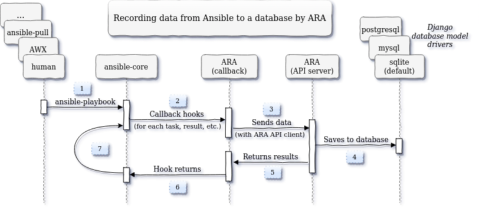
https://github.com/ansible-community/ara
It records playbooks
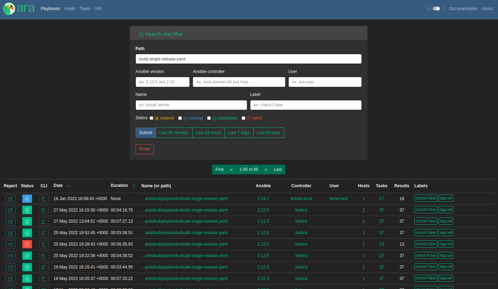https://demo.recordsansible.org/?path=build-single-release.yaml
It records hosts, tasks, results and files
(and a bunch of other things, too)
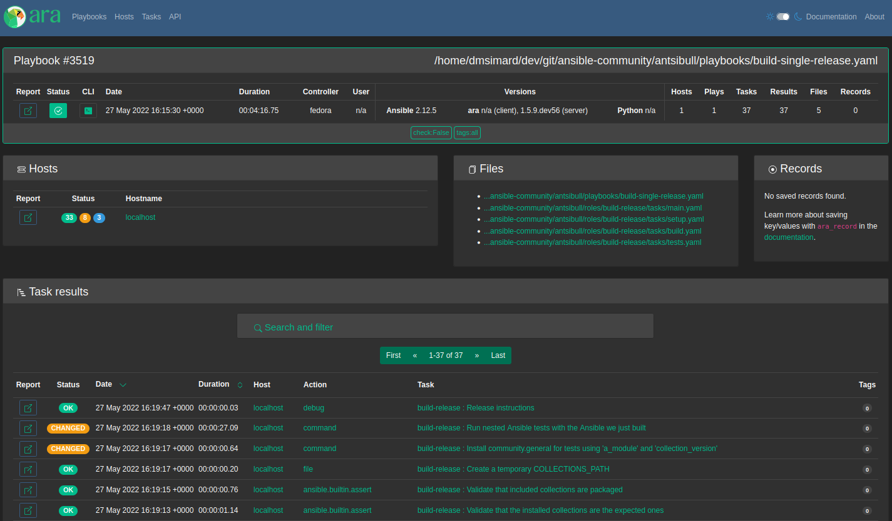https://demo.recordsansible.org/playbooks/3519.html
Getting started
# Install ansible (or ansible-core) with ara (including API server dependencies)
python3 -m pip install --user ansible "ara[server]"
# Configure Ansible to use the ara callback plugin
export ANSIBLE_CALLBACK_PLUGINS="$(python3 -m ara.setup.callback_plugins)"
# Run an Ansible playbook as usual
ansible-playbook hello-world.yml
# Use the CLI to see recorded playbooks
ara playbook list
# Start the development server at http://127.0.0.1:8000
# to query the API or browse recorded results
ara-manage runserverGetting started (with a server)
# Create a directory for a volume to store settings and a sqlite database
mkdir -p ~/.ara/server
# Start an API server with docker from the image on DockerHub:
docker run --name api-server --detach --tty \
--volume ~/.ara/server:/opt/ara -p 8000:8000 \
docker.io/recordsansible/ara-api:latest
# or with podman from the image on quay.io:
podman run --name api-server --detach --tty \
--volume ~/.ara/server:/opt/ara -p 8000:8000 \
quay.io/recordsansible/ara-api:latestGetting started (with a server)
# Install ansible (or ansible-core) with ara (excluding API server dependencies)
python3 -m pip install --user ansible ara
# Configure Ansible to use the ara callback plugin
export ANSIBLE_CALLBACK_PLUGINS="$(python3 -m ara.setup.callback_plugins)"
# Set up the ara callback to know where the API server is located
export ARA_API_CLIENT="http"
export ARA_API_SERVER="http://127.0.0.1:8000"
# Run an Ansible playbook as usual
ansible-playbook playbook.yaml
# Use the CLI to see recorded playbooks
ara playbook list
# Browse http://127.0.0.1:8000 (running from the container)
# to view the reporting interfaceWhat about the developer side ?
Demo !
tox -e ansible-integration --notest
source .tox/ansible-integration/bin/activate
export ANSIBLE_CALLBACK_PLUGINS=$(python3 -m ara.setup.callback_plugins)
export ANSIBLE_ACTION_PLUGINS=$(python3 -m ara.setup.action_plugins)
export ANSIBLE_LOOKUP_PLUGINS=$(python3 -m ara.setup.lookup_plugins)
ansible-playbook tests/integration/smoke.yaml
ara-manage runserverThere's a collection, too
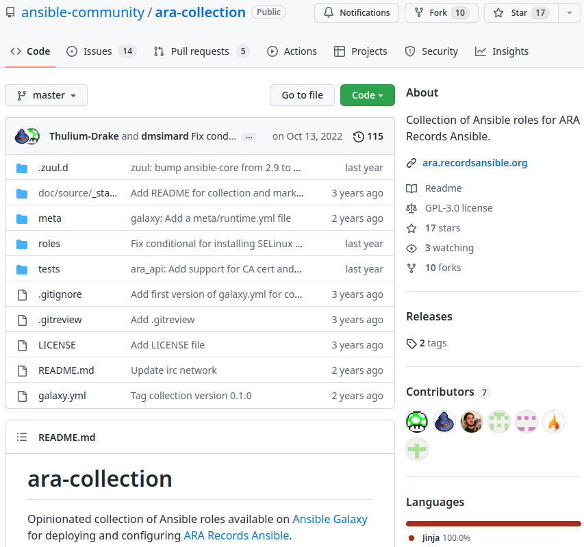https://github.com/ansible-community/ara-collection
https://galaxy.ansible.com/recordsansible/ara
The project could use your help !
- https://github.com/ansible-community/ara
- https://github.com/ansible-community/ara-collection
- https://github.com/ansible-community/ara-infra
https://ara.readthedocs.io/en/latest/contributing.html
Other interesting approaches
Want to know more ?
- 2023-02-08, 09:00–18:00, B.1.017: Ansible Contributor Summit
- FOSDEM 2022: Simple (but useful) Ansible reporting with ara
Thank You!
Any questions?
Come chat or stay up to date
- https://ara.recordsansible.org/blog/
- https://ara.recordsansible.org/community/
- #ara (libera.chat) bridged to #ara:libera.chat (Matrix)
https://twitter.com/@RecordsAnsible- https://fosstodon.org/@ara
Reach out:
- David Moreau-Simard
- Matrix: dmsimard:matrix.org
- Mastodon: fosstodon.org/@rfc2549